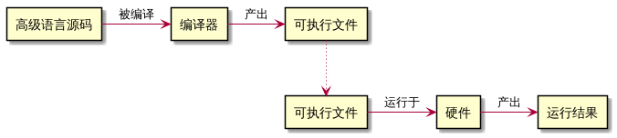
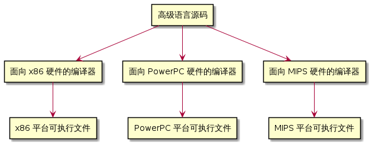

第零章第二节 编程语言简介¶
原文作者：Alex
首次发布：2007 年 5 月 27 日
最近更新：2020 年 5 月 18 日
译者：Karl Liu
翻译时间：2021 年 2 月 1 日
原文链接：https://www.learncpp.com/cpp-tutorial/introduction-to-programming-languages/
现代计算机的运算速度快得令人难以置信，并且还在变得越来越快。然而，计算机同样有一些显著的限制：他们天生只能理解一个有限范围内的指令，并且必须被准确地告知如何去做。
一个 计算机程序 （通常也被叫做一个 应用 ）是为了让计算机执行一些任务而编写的一组计算机可以照做的指令。创造一个程序的过程叫做 编程 。程序员通常通过生产 源代码 （通常简称 源码 ）来创造程序。这里的源码指的是一个或多个文件中的指令列表。
组成计算机并执行程序的一组计算机物理组件被称作 硬件 。一个计算机程序被加载进内存并硬件开始依次执行指令的过程被称作 运行 或者 执行 程序。
机器语言¶
一个电脑的 CPU 并不会说 C++。CPU 可以直接理解的一组有限的指令叫做 机器码 （或者 机器语言 或者一个 指令集 ）。
这里是一个样例机器语言指令：10110000 01100001
在以前计算机刚刚被发明的时候，程序员们不得不直接用机器语言写程序。这非常困难并且非常耗时。
这些指令是如何被组织起来的不再这个简介的讨论范围内，不过有两个有趣的事情需要指出。一是每个指令都是一个 0 和 1 的序列。每个独立的 0 或 1 被称作一个 二进制位 或 比特 。构成一个指令所需的比特数量并不恒定——举例来说，一些 CPU 的所有指令都是 32 个比特长，但一些其他的 CPU（比如 x86 系列，你很大概率正在用这样一款 CPU）接受长度不定的指令。
二是每一组二进制位都会被 CPU 解释作一个使其完成一个非常具体的任务的指令，比如 比较这两个数字 或者 把这个数字放进那个内存地址里。然而，因为不同的 CPU 有着不同的指令集，为一种 CPU 编写的程序不能用在指令集不同的另一种 CPU 上。这意味着程序大部分都不 可移植 （在不进行大的重写的前提下可用）到其他种类的系统中，必须要全部重写。
汇编语言¶
由于机器语言对于人类来说既难阅读又难理解，有人发明了汇编语言。在一个汇编语言里，每个指令都被一个短短的缩写指代，并且还可以使用名称和一些其他数字。
这里是上文中的机器语言指令对应的汇编语言：mov al, 061h
这个特点让汇编相比机器语言来说更加易读、易写。然而 CPU 不能直接理解汇编语言。所以汇编语言必须要被翻译成机器语言才能在计算机中运行。这个过程是通过一个叫做 汇编器 的程序完成的。用汇编写的程序通常非常快，现在在性能非常关键的情况下还是会使用汇编语言。（译注：快的不是语言是代码，汇编语言有写出非常快的程序的能力，但需要程序员有释放汇编能力的能力）
然而汇编语言仍然有一些缺点。首先，汇编语言为了完成一些简单的功能还是需要编写大量代码。即便单个指令可读性提升了，理解整个程序依然很有挑战性（这有点像认识了 26 个英文字母就去读一封英文信）。其次，汇编语言的可移植性依然不是太好——一个为一种 CPU 编写的汇编程序通常在其他的指令集中也运行不了，依然必须重写或者大规模修改。
高级语言¶
为了解决可读性和可移植性的问题，大家开发了新型编程语言，比如 C 语言、C++、Pascal（以及后来的 Java、Javascript 和 Perl）。这些语言被称作 高级语言 ，因为他们设计时允许程序员在编程时不用考虑程序将会运行在什么样的计算机上。
上面的语句对应的 C/C++ 语句是：a = 97;
和汇编语言很类似，用高级语言编写的程序在运行前也必须被翻译成计算机可以理解的格式。一旦你的代码变成了可执行文件，你在运行程序的时候就不再需要编译器了。在一开始，编译器生成的是原始的、未经优化的、运行缓慢的代码。然而经过了多年的发展，现在的编译器生成的代码已经可以自动优化，运行迅速，甚至在一些情况下比手写的汇编代码还要快！
这张图是一个简单概括了编译运行过程的示意图：

考虑到 C++ 程序通常需要被编译，我们很快将会探索关于编译器的一些细节。
一个 解释器 指的是一个可以直接运行未被编译成可执行程序的的源代码来运行程序的程序。解释器通常要比编译器更灵活，但效率会偏低。因为解释器通常需要在程序运行的同时翻译代码。当然这也意味着程序在运行的时候也同时需要这个解释器存在。
这张图是一个简单概括了解释运行过程的示意图：

选读
这里 是一篇关于编译器和解释器优劣对比的优秀文章。
大多数语言要么可以被编译要么可以被解释，传统语言，比如 C 语言、C++ 和 Pascal 只能被编译，而脚本语言，比如 Perl 和 Javascript 倾向于被解释。另外一些语言，比如 Java，既可以被编译也可以被解释。
高级语言通常具有很多我们想要的属性：
第一，高级语言对人来说更加易读易写，因为他们更加接近我们日常使用的日常语言。第二，相比低级语言，高级语言可以使用用更少的指令来完成同一个任务。这使得程序更加简洁易懂。在 C++ 里你可以在一行里写这样一个指令：a = b * 2 + 5;，但在汇编语言里这个指令可能需要五到六个不同的指令一起完成。
第三，程序可以根据系统（译注：此处指硬件系统）进行编译，为了在不同的 CPU 上运行你的程序你不需要要修改程序。举个例子：

对于可以执行来说，有两个特例。一是在很多操作系统中，比如微软 Windows，包含了一些平台专用的能力，你可以在自己的程序中引用他们。这可能会帮助你在特定的平台上写程序时更轻松，但在移植的时候会更加困难。在本教程中，我们会尽量避免这种平台专用代码。
一些编译器支持一些编译器专用拓展——如果你使用这些拓展，你的程序就不能在不更改的前提下使用其他不支持这些拓展的编译器进行编译。在你安装了一个编译器之后我们会多讨论一些关于这件事的东西。
规则、最佳实践以及警告¶
在这篇文章之后，我们会高亮很多非常重要的点，他们均属于以下三个类型。
规则
规则是一些按照语言的要求你 必须 要执行的指示。
最佳实践
最佳实践是一些你 应该 做的事情，这些事情是被标准规范的或者非常推荐你做的。换句话说，要么大家都在这么做（如果你不这样做你就会出乎别人的意料），或者相比其他方式这种方式更好。
警告
警告是一些你 不应该 做的事情，如果你做了，可能会发生意想不到的结果。